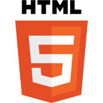

About.
About me.
Hi there! My name is Sophie, as you may already know since you are looking at my portfolio. I was born and raised in a small town in the Netherlands. Currently, I am studying Communication and Multimedia Design at the Amsterdam University of Applied Sciences. In my free time I like to go on citytrips & go out for drinks. But I am also a huge fan of staying in, watching a movie & cuddling with my pet.
Design VS Code.
If I am being honest, I do not know what I want to call myself yet: A designer or a developer. I could be a designer with frontend knowledge or I could be a frontend developer with design knowledge. Either way, I have a passion for both. And I think knowledge of each one of them helps me with the other one.
Skill.
-

-

-

-

-

- 
-

- Visual Interface Design
- User Experience Design
- Concept development
- Responsive webdesign
- Frontend development
Experience.
-
feb 2022 - jul 2022
Minor: Webdesign- & development
üìç Amsterdam University of Applied Sciences
-
sep 2019 - present
Bachelor: Communication and Multimedia Design
üìç Amsterdam University of Applied Sciences
-
dec 2021
Freelance job UX Design
üìç GITP
-
apr 2021 - jun 2021
Internship UX Design
üìç GITP